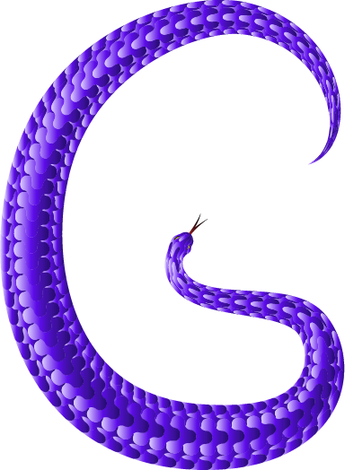
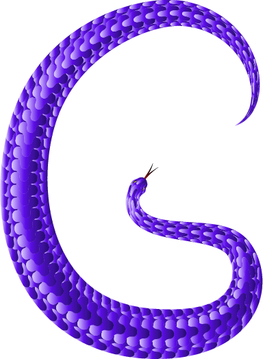

- #BFB0FF
- #5D0CEA
- #3D109D
- #231F20

 


PROCESS
The inspiration behind the snake world project includes a variety of experience that occurs in my lives. I came up with the first idea a couple of months ago at my birthday party. I remember my parents said something about my zodiac sign “Snake” which got a year older age. The year of the snake is considered as zodiacal since people’s personality or traits are influenced by the animal sign based on the time of birth. For the second idea, the Gucci fashion brand came to my eyesight occasionally due to its popularity. There is a snake design in one of their products which inspires me to do this project even more. As for the font design, the blackletter typeface gives me a new approach to the design from their unique strokes and style. Therefore, I decided to use parallel pens to design the typeface for a distinctive look where not all strokes are curly and distorted.
INSPIRATION
The main goal of using snakes in the design is to convey a message of risk from their traits. Some people believe snakes indicate a strong force in nature and the capability to become immortal, but they can also be risky and evil from their desires and venom. Based on this, I use society as a representative to reveal the idea. The consumption of alcohol and cigarettes would be a great thing to discuss from society. The health problem behind this is also significant to the topic. According to the national institutes of health, there are about 95,0005 people die from both the use of alcohol and tobacco annually; the effects include cancer and heart disease. As a result, alcohol, and cigarettes are used as the main element to illustrate the purpose of risk.
GOAL
The snake investigation process was divided into four parts: body structure, head, size, and scale. In their bodies, they have about 200 to 400 vertebrae with many attached ribs, this contributes to their flexibility which is why they can always move curly. Next, their heads are mostly triangular-shaped head that consists of venom. The size is also varied among species which is approximately 3.3 ft in length. For the scales, snakes have different patterns that contain an outer surface and an inner surface similar to fish scales.